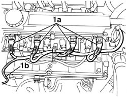
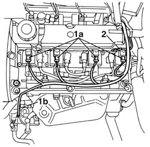
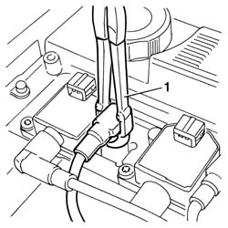
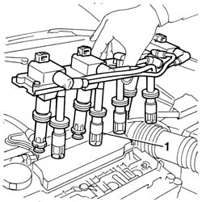
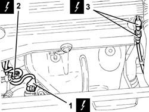
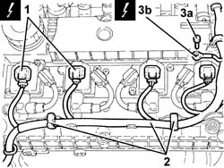
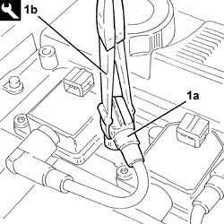
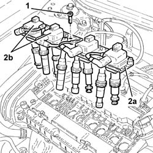
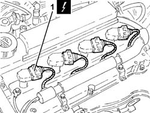
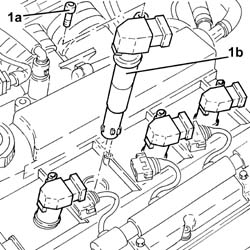

5510C14 ignition coil/s - r+r
- Path
- Procedures > 55 ELECTRICAL EQUIPMENT > 5510 ENGINE IGNITION > 5510C coil, ecu, sensors > 5510C14 ignition coil/s - r+r
- Kind
- repair procedure (removal / refitting; the operation number is the code)
- Applies to
- engines: 1.6 TS , 1.8 TS, 2.0 JTS, 2.5 V6, 2.0 JTS; all production periods
- Interactive page
- https://sloeber94.github.io/elrnDB-a156/en/#/3238399
Applies to: engines: 1.6 TS , 1.8 TS; all production periods
 Removing
Removing
 Refitting
RefittingPlace the car on a ramp.
5530B22 battery earth lead - r+r
1016A40 ignition coil cover on cylinder head- r+r
Undo the retaining clip on the cam cover and release the injection/ignition lead.
Applies to: engines: 1.6 TS ; all production periods
1. Disconnect the electrical connections from ignition coil (1a), air conditioner compressor (where present) (1b) and remove the injection/ignition lead from the cam cover and place to one side.
 | Name | Connector |
|---|---|---|
1a | Ignition coil |
| Name | Connector |
|---|---|---|
1b | Air conditioning compressor "on" electromagnet |

Applies to: engines: 1.6 TS ; all production periods
1. Disconnect electrical connections (1a) from ignition coils, from air conditioner compressor (where present) (1b) and remove the injection/ignition lead from the cam cover and place to one side.
2. Undo the bolt securing the earth on the single ignition coil mounting plate.
| Name | Connector |
|---|---|---|
1a | Ignition coil |
| Name | Connector |
|---|---|---|
1b | Air conditioning compressor "on" electromagnet |

Applies to: engines: 1.6 TS , 1.8 TS; all production periods
1. Disconnect the four rubber caps from the spark plugs by pulling up with the appropriate tool.
 | Name | Country |
|---|---|---|
1 | Pliers | 1.820.636.000 |

Applies to: engines: 1.6 TS , 1.8 TS; all production periods
Unscrew the three bolts securing the single plate that supports the four ignition coils.
1. Pull up the ignition coil mounting plate assembly and remove the assembly from the cam cover.

Applies to: engines: 1.6 TS , 1.8 TS; all production periods
To separate a single ignition coil from the single mounting plate, first disconnect the spark plug lead from the coil and then unscrew both bolts securing the coil to the plate.
Applies to: engines: 1.6 TS , 1.8 TS; all production periods
Refitting
RemovingFit the ignition coil to the single mounting plate, tighten both retaining bolts and connect the spark plug lead to the relevant coil.
Fit the single plate to the cam cover so that the caps connected to the coils and spark plug leads are adjusted on the spark plugs.
Push on the single mounting plate to drive the four coil caps fully home on the spark plugs.
Tighten the three ignition coil mounting plate retaining bolts.
Push on the protruding part of the spark plug lead cap to drive home the concealed part of the cap onto the other four spark plugs.
Applies to: engines: 1.6 TS ; all production periods
Connect the electrical connections from the single injection/ignition lead to all four ignition coils and the compressor in cars fitted with an air conditioner.
| Name | Connector |
|---|---|---|
1a | Ignition coil |
| Name | Connector |
|---|---|---|
1b | Air conditioning compressor "on" electromagnet |
Applies to: engines: 1.6 TS ; all production periods
Connect the electrical connections of the single injection/ignition coil to all four ignition coils and to the compressor in cars fitted with an air conditioner. Tighten the bolt securing the earth to the single coil mounting plate.
Applies to: engines: 1.6 TS , 1.8 TS; all production periods; only with equipment: Euro 3
Removing
RefittingEnsure that the ignition key is in the OFF position, then disconnect the negative battery terminal (-).
| Name | Connector |
|---|---|---|
- | Battery |
Proceed with removal 1016A40 ignition coil cover on cylinder head- r+r .
1. Disconnect the electrical connection for the right Lambda sensor.
| Name | Connector |
|---|---|---|
1 | Lambda sensor |
2. Disconnect the electrical supply connection for the air conditioning compressor.
| Name | Connector |
|---|---|---|
2 | Air conditioning compressor "on" electromagnet |
3. Disconnect the electrical connection for the left Lambda sensor.
| Name | Connector |
|---|---|---|
3 | Lambda sensor |

Applies to: engines: 1.6 TS , 1.8 TS; all production periods; only with equipment: Euro 3
1. Disconnect the electrical connections from the ignition coils.
| Name | Connector |
|---|---|---|
1 | Ignition coil |
2. Release the electrical wiring from the fastenings on the tappet cover.
3. Undo the bolt (3a) and disconnect the earth lead (3b) from the ignition coils support plate.
| Name | Connector |
|---|---|---|
3b | Earth on engine |

Applies to: engines: 1.6 TS , 1.8 TS; all production periods; only with equipment: Euro 3
1. Disconnect the covers for the high tension leads (1a) from the spark plugs using the tool (1b).
| Name | Country |
|---|---|---|
1b | Pliers | 1.820.636.000 |

Applies to: engines: 1.6 TS , 1.8 TS; all production periods; only with equipment: Euro 3
1. Undo the bolts fixing the ignition coil support plate.
2. Pull the plate (2a), complete with ignition coils (2b), upwards.

Applies to: engines: 1.6 TS , 1.8 TS; all production periods; only with equipment: Euro 3
At the bench, undo the bolts and separate the ignition coils from the plate.
Applies to: engines: 1.6 TS , 1.8 TS; all production periods; only with equipment: Euro 3
Refitting
RemovingPlace the plate, complete with ignition coils, back in its housing.
Tighten the blts fixing the ignition coils support plate.
Connect the high tension lead covers to the spark plugs.
Connect the earth lead to the ignition coils support plate and secure it using the bolt.
Secure the electrical wiring to the fastenings on the tappet cover.
Connect the electrical connections to the ignition coils.
Connect the electrical connection for the left Lambda sensor.
Connect the electrical supply connection for the air conditioning compressor.
Connect the electrical connection for the right Lambda sensor.
Proceed with refitting 1016A40 ignition coil cover on cylinder head- r+r .
Connect the negative (-) battery terminal.
Applies to: engines: 2.5 V6; all production periods
Removing
Refitting1048A48 throttle heater sleeve - r r
1072B50 sleeves connecting air capacity box to inlet manifold is - r+r
5510C18 right hand cylinder head ignition coil - r+r
Applies to: engines: 2.5 V6; all production periods
Refitting
Removing5510C16 left hand cylinder head ignition coil - r+r
1016A42 left hand cylinder head ignition coil cover - r+r
5510C18 right hand cylinder head ignition coil - r+r
1072B50 sleeves connecting air capacity box to inlet manifold is - r+r
Applies to: engines: 2.0 JTS, 2.0 JTS; all production periods
Removing
RefittingEnsure that the ignition key is in the OFF position, then disconnect the negative battery terminal (-).
| Name | Connector |
|---|---|---|
- | Battery |
Proceed with removal 1016A40 ignition coil cover on cylinder head- r+r .
1. Disconnect the electrical connections from the ignition coils.
| Name | Connector |
|---|---|---|
1 | Ignition coil |

Applies to: engines: 2.0 JTS, 2.0 JTS; all production periods
1. Undo the bolts (1a) and remove the ignition coil (1b).

Applies to: engines: 2.0 JTS, 2.0 JTS; all production periods
Refitting
RemovingPlace the ignition coils back in their housings and secure them by tightening the bolts to the recommended torque.
 | Fastening | Component | Ø | Value (daNm) |
|---|---|---|---|---|
- | Bolt | IGNITION COIL/REEL | M6 | (Tappet cover side) 0.8 ÷ 1.0 |
Connect the electrical connections to the ignition coils.
Proceed with refitting 1016A40 ignition coil cover on cylinder head- r+r .
Connect the negative (-) battery terminal.
Topics linked from this page (13)
- 1016A40 ignition coil cover on cylinder head- r+r
- 1016A42 left hand cylinder head ignition coil cover - r+r
- 1048A48 throttle heater sleeve - r r
- 1072B50 sleeves connecting air capacity box to inlet manifold is - r+r
- 5510C16 left hand cylinder head ignition coil - r+r
- 5510C18 right hand cylinder head ignition coil - r+r
- 5530B22 battery earth lead - r+r
- A1B Battery ( BATTERY NEGATIVE )
- A30 Ignition coil
- C40B Earth on engine ( ENGINE )
- K39 Lambda sensor
- K40 Lambda sensor
- L20 Air conditioning compressor "on" electromagnet
Topics that link to this page (35)
- B10 ENGINE DOES NOT START / UNDER NO CIRCUMSTANCES
- B11 ENGINE STARTS WITH DIFFICULTY' / WHEN WARM
- B20 ENGINE STARTS, AND CUTS OUT STRAIGHT AWAY
- D01 ENGINE NOT RUNNING SMOOTHLY / (HESISTANT)
- D10 ENGINE IDLE IRREGULAR
- Z54 MISFIRE ERROR IN ONE CYLINDER
- 1008C14 engine link bracket - r r
- 1008C18 link mount on engine - r r
- 1008C19 engine link mount - r r
- 1016A20 single cam cover - r + r and replace gasket
- 1016C10 cylinder head - r + r and replace gasket
- 1016D21 lh cylinder head - r r and replace gasket for versions with air conditioner
- 1016D25 rh cylinder head - r r and replace gasket for versions with air conditioner
- 1020D12 front crank shaft oil seal cover - r + r and replace seals
- 1020D18 front crank shaft cover oil seal - replace
- 1020E10 oil seal cover (one) - l or r - on counter-rotating shafts - r + r and replace seals
- 1020E20 front oil seal of one counter-rotating shaft, l or r - r + r
- 1028H10 connecting rod and piston set - r r
- 1032B14 toothed timing belt - r + r for timing adjustment or replacement versions with air conditioner
- 1032B47 toothed drive pulley - r r for versions with air conditioner
- 1032B52 toothed driven pulley (one) - r + r
- 1032B55 lh head toothed drive pulley - r r for versions with air conditioner
- 1032B59 rh head toothed drive pulley - r r for versions with air conditioner
- 1032C18 mobile timing system tensioner - r + r for 24 valve engines
- 1032C32 fixed timing system tensioner (one) r + r
- 1036C10 camshaft in cylinder head - r r on vehicle
- 1036E11 camshafts in left hand cylinder head - r r on vehicle for versions with air conditioner
- 1036E15 camshafts in rh cylinder head - r r on vehicle for versions with air conditioner
- 1036E19 camshafts in lh and rh cylinder head - r r on vehicle for versions with air conditioner
- 1036E54 front oil seals of l/h overhead camshaft - replace
- 1036E58 front oil seal of r/h overhead camshafts - replace
- 1084B23 oil pump control return - r r
- 1088C12 water pump - r+r for versions with air conditioner
- 5510D10 spark plugs - r+r
- 5510D14 spark plug cable lead bundle - r+r